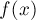
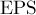

MAXimal
добавлено: 23 Jul 2009 12:53
редактировано: 23 Jul 2009 12:53
Содержание [скрыть]
Тернарный поиск
Постановка задачи
Пусть дана функция , унимодальная на некотором отрезке ![[l;r]](../tex2png/cache/26853b907ea3f6227b00c5afac10292a.png) . Под унимодальностью понимается один из двух вариантов. Первый: функция сначала строго возрастает, потом достигает максимума (в одной точке или целом отрезке), потом строго убывает. Второй вариант, симметричный: функция сначала убывает убывает, достигает минимума, возрастает. В дальнейшем мы будем рассматривать первый вариант, второй будет абсолютно симметричен ему.
. Под унимодальностью понимается один из двух вариантов. Первый: функция сначала строго возрастает, потом достигает максимума (в одной точке или целом отрезке), потом строго убывает. Второй вариант, симметричный: функция сначала убывает убывает, достигает минимума, возрастает. В дальнейшем мы будем рассматривать первый вариант, второй будет абсолютно симметричен ему.
Требуется найти максимум функции на отрезке .
Алгоритм
Возьмём любые две точки и в этом отрезке: . Посчитаем значения функции и . Дальше у нас получается три варианта:
- Если окажется, что , то искомый максимум не может находиться в левой части, т.е. в части . В этом легко убедиться: если в левой точке функция меньше, чем в правой, то либо эти две точки находятся в области "подъёма" функции, либо только левая точка находится там. В любом случае, это означает, что максимум дальше имеет смысл искать только в отрезке .
- Если, наоборот, f(m_2)">, то ситуация аналогична предыдущей с точностью до симметрии. Теперь искомый максимум не может находиться в правой части, т.е. в части
![[m_2;r]](../tex2png/cache/ef5e852eccfa5e38fd893aed967f8bac.png) , поэтому переходим к отрезку .
, поэтому переходим к отрезку . - Если , то либо обе эти точки находятся в области максимума, либо левая точка находится в области возрастания, а правая — в области убывания (здесь существенно используется то, что возрастание/убывание строгие). Таким образом, в дальнейшем поиск имеет смысл производить в отрезке , но (в целях упрощения кода) этот случай можно отнести к любому из двух предыдущих.
Таким образом, по результату сравнения значений функции в двух внутренних точках мы вместо текущего отрезка поиска находим новый отрезок . Повторим теперь все действия для этого нового отрезка, снова получим новый, строго меньший, отрезок, и т.д.
Рано или поздно длина отрезка станет маленькой, меньшей заранее определённой константы-точности, и процесс можно останавливать. Этот метод численный, поэтому после остановки алгоритма можно приближённо считать, что во всех точках отрезка достигается максимум; в качестве ответа можно взять, например, точку  .
.
Осталось заметить, что мы не накладывали никаких ограничений на выбор точек и . От этого способа, понятно, будет зависеть скорость сходимости (но и возникающая погрешность). Наиболее распространённый способ — выбирать точки так, чтобы отрезок делился ими на 3 равные части:

Впрочем, при другом выборе, когда и ближе друг к другу, скорость сходимости несколько увеличится.
Случай целочисленного аргумента
Если аргумент функции  целочисленный, то отрезок тоже становится дискретным, однако, поскольку мы не накладывали никаких ограничений на выбор точек и , то на корректность алгоритма это никак не влияет. Можно по-прежнему выбирать и так, чтобы они делили отрезок на 3 части, но уже равные только приблизительно.
целочисленный, то отрезок тоже становится дискретным, однако, поскольку мы не накладывали никаких ограничений на выбор точек и , то на корректность алгоритма это никак не влияет. Можно по-прежнему выбирать и так, чтобы они делили отрезок на 3 части, но уже равные только приблизительно.
Второй отличающийся момент — критерий остановки алгоритма. В данном случае тернарный поиск надо будет останавливать, когда станет , ведь в таком случае уже невозможно будет выбрать точки и так, чтобы были различными и отличались от и  , и это может привести к зацикливанию. После того, как алгоритм тернарного поиска остановится и станет , из оставшихся нескольких точек-кандидатов надо выбрать точку с максимальным значением функции.
, и это может привести к зацикливанию. После того, как алгоритм тернарного поиска остановится и станет , из оставшихся нескольких точек-кандидатов надо выбрать точку с максимальным значением функции.
Реализация
Реализация для непрерывного случая (т.е. функция имеет вид: ):
double l = ..., r = ..., EPS = ...; // входные данные while (r - l > EPS) { double m1 = l + (r - l) / 3, m2 = r - (r - l) / 3; if (f (m1) < f (m2)) l = m1; else r = m2; }
Здесь  — фактически, абсолютная погрешность ответа (не считая погрешностей, связанных с неточным вычислением функции).
Вместо критерия "while (r - l > EPS)" можно выбрать и такой критерий останова:
for (int it=0; it<iterations; ++it)
С одной стороны, придётся подобрать константу , чтобы обеспечить требуемую точность (обычно достаточно нескольких сотен, чтобы достичь максимальной точности). Но зато, с другой стороны, число итераций перестаёт зависеть от абсолютных величин и , т.е. мы фактически с помощью задаём требуемую относительную погрешность.